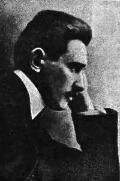
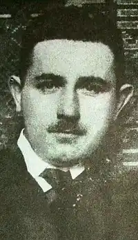

Степан Чарнецький (1881— 1944) — поет, фейлетоніст, театральний діяч і критик. Темами, мотивами, настроями й образами його поезії співзвучні з творчістю інших учасників літературної групи "Молода муза", до якої належав поет.
Автор патріотичного гімну українських січових стрільців "Червона калина" ("Ой, у лузі червона калина похилилася…").
Степан Миколайович Чарнецький народився 21 січня 1881 в селі Шмальківцях (тепер Чортківського району Тернопільської області). Селянський син, тринадцята дитина в родині (батько помер ще до його народження), Степан учився у гімназії, звідки був відрахований за зневажливе ставлення до релігії, навчався у реальній школі, Львівському політехнічному інституті. Працював інженером-мостобудів-ником. З 1913 р. — режисер і художній керівник українського театру у Львові. Однак С. Чарнецький так захопився літературою і театром, що полишив навчання в інституті. Зблизившись із літературними угрупуваннями "Молода Муза" та "Молода Польща", весь віддався заняттям літературою й мистецтвом: друкував вірші й фейлетони, виступав у пресі з рецензіями на театральні вистави, перекладав для українського театру п’єси та лібрето опер з німецької та польської мов. Під час Першої світової війни письменник був мобілізований до війська, але за станом здоров’я звільнений від служби. Співпрацював у тогочасній пресі ("Діло", "Українське слово", "Шляхи"), пізніше був референтом преси у Львівському магістраті. У збірках поезій "В годині сумерку" (1908), "В годині задуми" (1917), "Сумні ідеї" (1920) показав трагічну долю галицького селянина, солдата австрійської армії, відбив дух боротьби прогресивних сил проти реакції. Частина поезій С. Чарнецького пройнята декадентськими мотивами. У 1921 р. вийшла збірка фейлетонів і новел Степана Миколайовича "Дикий виноград", які друкувалися під псевдонімом Тіберій Горобець. Чарнецький — автор "Нарису історії українського театру в Галичині" (1934), що досі не втратив своєї наукової вартості. У житті не раз доводилося йому скрутно. "Всі дивуються, як він живе і чим живе. Та ніхто не чув ніколи, щоб він жалувався на важкі умови існування… Є в що вдягнутися — добре, нема — обійдеться", — писав про нього П. Карманський. Щоправда, далеко не вся поетична спадщина його зібрана, вона розсипана по газетах та журналах і ще чекає свого дослідника. Виступав С. Чарнецький також із новелами та фейлетонами, театральними рецензіями, перекладами віршів, п’єс і лібретто опер для театру з німецької та польської на українську мову та з української на польську. Зокрема, сучасники відзначали його майстерний польський переклад вірша І. Франка "Як почуєш вночі…". Після 1939 р. Степан Чарнецький працював науковим співробітником Львівської наукової бібліотеки (сьогодні – Львівська наукова бібліотека ім. В. Стефаника НАН України). Помер С. Чарнецький 2 жовтня 1944 року у Львові.